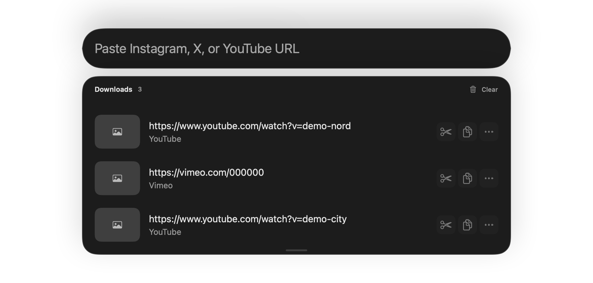

macOS · vidéo · sources publiques
Vos vidéos. À portée de main.
Collez un lien, téléchargez avec yt-dlp, puis retrouvez et découpez vos vidéos dans une app native pour Mac.

Le parcours
Du lien à l’extrait, sans quitter votre Mac.
Collez
Une vidéo ou une playlist YouTube. yt-dlp prend en charge de nombreux autres sites.
Téléchargez
Suivez la progression et retrouvez chaque élément dans l’historique.
Découpez
Gardez un extrait, enregistrez-le ou copiez-le pour le partager.
Pensé pour macOS
Un geste rapide. Un vrai historique.
Raccourci global, accès dans la barre des menus et copie automatique optionnelle. Les réseaux sociaux nécessitant une session peuvent utiliser les cookies du navigateur ou un fichier cookies.txt.
- Raccourci ⌘⇧6L’app depuis n’importe où.
- Historique et extraitsRetrouver, copier, couper.
- Cobalt en secoursUn lien externe si un site résiste au téléchargement ; aucun transfert automatique de vos liens. cobalt.tools ↗ · GitHub ↗
Installer
À vous de choisir.
Installez avec Homebrew, ou téléchargez le DMG Apple Silicon depuis la release GitHub.
brew install --cask mondary/tap/pkmedia-downloadercurl -fL -o PKMediaDownloader-v1.2026.12-macos-arm64.dmg https://github.com/mondary/media-downloader/releases/download/v1.2026.12/PKMediaDownloader-v1.2026.12-macos-arm64.dmgVersion 1.2026.12 · macOS 14+ · Apple Silicon. DMG signé ad hoc, non notarisé : une autorisation manuelle dans Confidentialité et sécurité peut être nécessaire au premier lancement. yt-dlp et ffmpeg sont requis (installés par le cask).